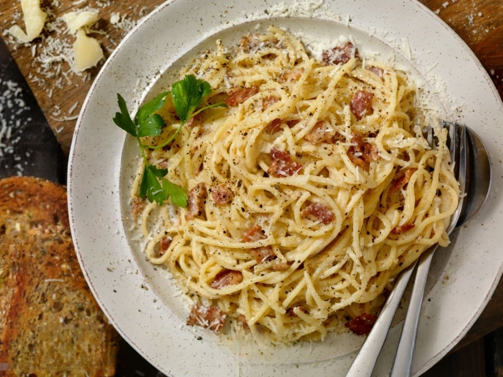

Spaghetti Carbonara
Ingredients:
- 8 ounces spaghetti
- 4 ounces pancetta or bacon, diced
- 2 cloves garlic, minced
- 2 large eggs
- 1/2 cup grated Parmesan cheese
- 1/4 cup grated Pecorino Romano cheese
- Freshly ground black pepper
- Salt, to taste
- Chopped parsley (optional, for garnish)
Instructions:
- Cook the spaghetti in a large pot of salted boiling water until al dente, according to the package instructions. Drain and set aside.
- In a skillet, cook the diced pancetta or bacon over medium heat until crispy. Remove from heat and set aside.
- In a bowl, whisk together the eggs, Parmesan cheese, Pecorino Romano cheese, minced garlic, and a generous amount of freshly ground black pepper.
- Return the drained spaghetti to the pot. Pour the egg mixture over the hot pasta and toss quickly to coat. The heat from the pasta will cook the eggs and create a creamy sauce. Add the cooked pancetta or bacon and toss again to combine.
- Season with salt if needed, although the pancetta or bacon is usually salty enough.
- Serve the Spaghetti Carbonara immediately, garnished with chopped parsley if desired.
- Enjoy the rich and flavorful Spaghetti Carbonara!